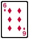
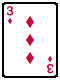
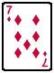
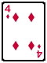
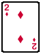
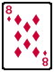
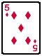

Lesson 04 - Sorting Algorithms
At the end of this lesson, you will be able to:
- Describe how sorting algorithms work and the two basic operations used in most sorting algorithms.
Introduction to Sorting
Sorting is a very common problem handled by computers. For example, most graphical email programs allow users to sort their email messages in several ways: date received, subject line, sender, priority, etc. Each time you reorder your email messages, the computer uses a sorting algorithm to sort them. Since computers can compare a large number of items quickly, they are quite good at sorting.
During the next few lessons, you will learn two different algorithms for sorting: the Insertion Sort, and the Selection Sort. These algorithms will give us a basis for comparing algorithms and determining which ones are the best.
We will illustrate each algorithm by sorting a hand of playing cards like the ones below. Traditionally, a group of playing cards is called a "hand" of cards. In the next few lessons, we will use the term "hand" to refer to a group of seven playing cards.
 |
 |
 |
 |
 |
 |
 |
Then we will show how the algorithm also applies to the problem of sorting a list of numbers in a computer. Our list of numbers will be stored in an array of memory cells like the diagram below.
| 7 | 8 | 5 | 2 | 4 | 6 | 3 |
Operations in Sorting algorithms
Sorting algorithms you will learn in the next few lessons share two basic operations in common. These operations are the comparison operation and the swap operation. We will look at each one in more detail before we examine our sorting algorithms.
The Comparison Operation
The comparison operation is simply a way of determining which item in a list should come first. If we are sorting a list of numbers from smallest to largest, the comparison operation tells us to place the number with the least value first. If we are sorting a list of letters alphabetically, the comparison operation tells us to place 'a' before 'b', 'b' before 'c', and so on. We will see that a sorting algorithm must usually perform many comparisons in order to correctly sort a list.
The Swap Operation
The swap operation is one way we move items as we are sorting. By swapping small items with large ones, we can place all the items in the correct order. When we use computers for sorting, the swap operation can be a little tricky because of the way computers copy data from one memory location to another. Use the steps below to understand how the swap algorithm works.
| A | Temp | B |
| 34 | 56 |
- Copy the contents of cell A to temp.
- Copy the contents of cell B to cell A.
- Copy the contents of temp to cell B.
Notice that this operation requires three copies. It is important to remember that the swap operation is really a combination of copy operations. In our next lesson, we will learn a sorting algorithm called the Insertion Sort that uses just the comparison operation and the swap operation.